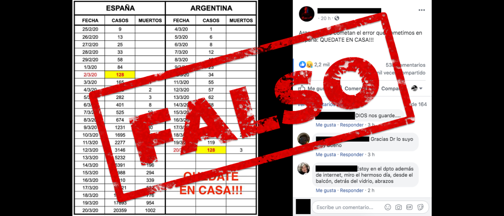

ESPAÑA
Poco más de seis meses después de registrar su primer caso del nuevo coronavirus, Brasil superó el sábado (29.08.2020) el lúgubre umbral de los 120.000 muertos de COVID-19, sin ver la luz al final del túnel. El gigante sudamericano registra 120.262 muertes por la pandemia y 3.846.153 de casos, dijo el Ministerio de Salud en su actualización diaria. Tales cifras solo son superadas por Estados Unidos, de lejos, el país del mundo más castigado por el coronavirus con más de 182.000 muertes. A diferencia de Europa y Asia, donde el virus golpeó con fuerza y luego disminuyó, en Brasil avanza a un ritmo lento y devastador, afirma Christovam Barcellos, investigador de la prestigiosa institución científica Fundación Oswaldo Cruz (Fiocruz). "Brasil es único en el mundo. Desde el inicio de la pandemia, su curva ha sido diferente a la de otros países, mucho más lenta", dijo."Ahora se ha estabilizado, pero a un nivel muy peligroso: alrededor de 1.000 muertes y 40.000 casos por día. Brasil todavía no ha pasado el pico", agregó Barcellos. Brasil confirmó su primer caso del virus el 26 de febrero, un empresario de Sao Paulo que regresaba de un viaje a Italia, y registró su primera muerte el 16 de marzo. La pandemia pronto se volvió un cuestión política, en este país de 212 millones de habitantes y 27 estados que tienen amplias competencias en temas de salud. El presidente del país, Jair Bolsonaro, condenó la "histeria" en torno al virus y atacó a gobernadores y alcaldes que impusieron medidas de aislamiento social, argumentando que el daño económico sería peor que la propia enfermedad.El líder ultraderechista promovió además la hidroxicloroquina como una solución, a pesar de una serie de estudios muestran que es ineficaz contra el nuevo coronavirus. Este sábado volvió a defender el uso del fármaco. Los expertos coinciden en que la falta de un mensaje coherente de los líderes brasileños es responsable del fracaso del país en "aplanar la curva". El estado brasileño con peores números sigue siendo Sao Paulo, el más rico y poblado del país, con 46 millones de habitantes, al registrar hasta ahora 29.944 decesos y 801.422 casos.
RUSIA
Rusia reportó este lunes (05.10.2020) cerca de 11.000 nuevas infecciones por coronavirus, un nivel cercano al registrado en mayo, aunque las autoridades no han previsto por ahora medidas de confinamiento importantes. En detalle, este lunes se registraron 10.888 nuevos casos y 117 muertes, una cifra cercana al récord de 11.656 casos registrados el 11 de mayo, cuando regía un confinamiento estricto en el país. Esta vez, las autoridades rusas parecen querer evitar medidas restrictivas importantes y consideran que el sistema de salud es capaz de garantizar la acogida de los enfermos y tiene medicamentos y material de protección suficientes. "No queremos (confinamiento) y no vamos a hacerlo", dijo el viernes la viceprimera ministra de Salud rusa, Tatiana Gólikova, al tiempo que reconoció un "grave aumento" de los casos e insistió en el cumplimiento de las medidas sanitarias, como el uso de mascarillas. "No creo que deba ordenarse un régimen de confinamiento general", dijo por su parte el lunes a la agencia estatal RIA Novosti el senador Valery Ryazansky, vicepresidente del comité de asuntos sociales del Consejo de la Federación, la cámara alta del Parlamento. Sin embargo, la ciudad de Moscú, que representa un tercio de los nuevos casos, ordenó a las empresas que pongan al menos el 30% de su personal en teletrabajo desde este lunes y hasta el 28 de octubre para reducir entre otros la congestión del transporte público. Rusia registra hasta ahora 1.225.889 casos de coronavirus y 21.475 muertes.